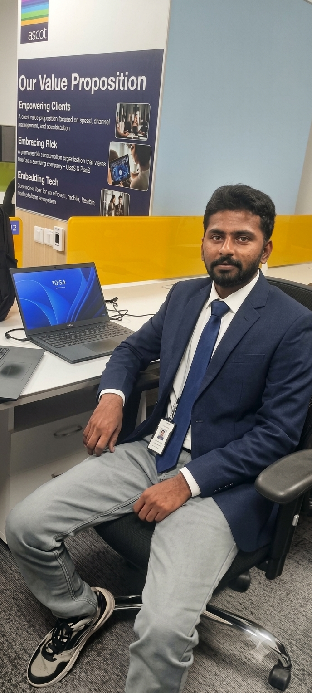

Backend
ASP.NET Core · Entity Framework · RESTful APIs
Software Engineer | .NET | Backend Development | AI & ML
I'm Venkatesh Gorla, an Artificial Intelligence & Machine Learning graduate with hands-on experience in .NET development. I worked as an Associate Software Engineer Intern at Mphasis, where I contributed to backend development using ASP.NET Core, RESTful APIs, database integration, testing, and troubleshooting.

About
I enjoy turning ideas into practical solutions and continuously learning how things work beneath the surface. My journey has taken me from studying Artificial Intelligence & Machine Learning to gaining practical exposure to software development in a professional environment.
I’m particularly interested in backend engineering, problem-solving and building applications that are reliable, maintainable and useful. My AI & ML background also gives me a different perspective when approaching technical problems, allowing me to explore both software engineering and intelligent systems.
Skills
ASP.NET Core · Entity Framework · RESTful APIs
C · C# · Python · Java · JavaScript · TypeScript · SQL
HTML · CSS · Bootstrap · MongoDB · SQL Server
Git · GitHub · GitHub Copilot · Postman · Computer Networks · OS · DSA · OOP
Experience
Worked as part of a software development team on .NET-based applications, gaining practical experience in backend development, API development, testing and troubleshooting.
Contributed to the NexOps Health Monitoring Platform by working with ASP.NET Core RESTful APIs, database integration and application maintenance while collaborating with team members to investigate and resolve software issues.
Built a strong foundation in programming, software engineering, data structures, machine learning, operating systems and computer networks, while developing practical knowledge through academic and technical projects.
Credentials
Completion certificate for the Associate Software Engineer internship and .NET FSD experience.
View Mphasis Internship Certificate ↗Offer document for the Systems Engineer role at Tata Consultancy Services.
View TCS Offer Letter↗Software Engineering
Contributed to an application health monitoring platform focused on monitoring system health and operational status. Worked with ASP.NET Core REST APIs, database operations, API integration, testing, debugging and maintenance.
Machine Learning
Built a machine-learning model to classify sonar signals as naval mines or rocks and evaluated it with multiple classification metrics.
Web Development
A JavaScript-based home rental project that demonstrates interface building and practical front-end development.
Deep Learning
Explored deep-learning techniques to classify rice grain types using a Jupyter Notebook workflow.
Achievements
Education
Bachelor of Technology — Artificial Intelligence and Machine Learning · Tirupati, Andhra Pradesh
Intermediate — MPC · Rayachoty, Andhra Pradesh
Secondary School Certificate (SSC) · Rayachoty, Andhra Pradesh
Contact
Open to software engineering, .NET development and AI/ML opportunities.
Start a conversation ↗Internship at Mphasis
Learning, building and collaborating in a real engineering environment. Click any image to view it larger.